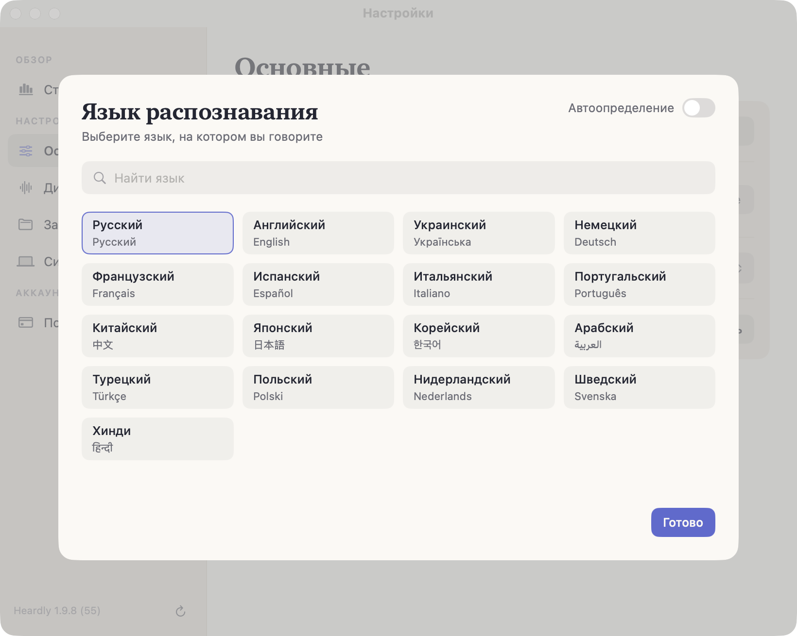
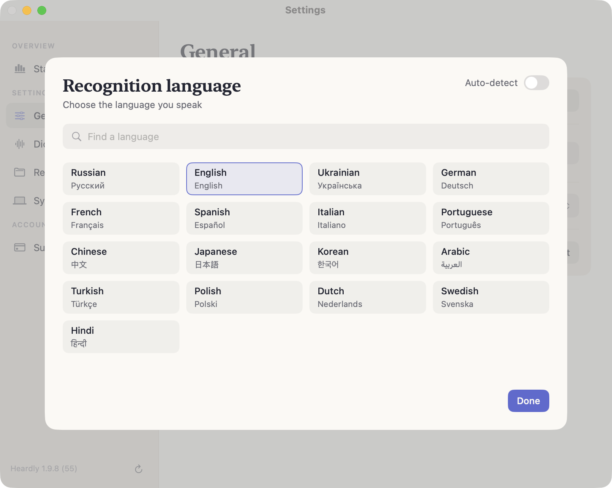

Модель и языкиModel and languages
Распознаванием занимается модель Parakeet, которая целиком лежит на вашем компьютере и считается на Neural Engine.Recognition is done by the Parakeet model, which lives entirely on your computer and runs on the Neural Engine.
МодельThe model
Heardly использует Parakeet Ultra. Модель скачивается один раз при первом запуске, занимает около 600 МБ и лежит в ~/Library/Application Support/FluidAudio/Models/.
Поверх базовой модели Heardly доставляет собственную доработку под русскую речь: она подтягивается отдельным небольшим обновлением и улучшает разбор русского, не трогая остальные языки.
Выбора между моделями в приложении нет — она одна. Облачных моделей и ключей к чужим API тоже нет.
Heardly uses Parakeet Ultra. The model is downloaded once on first launch, takes about 600 MB and sits in ~/Library/Application Support/FluidAudio/Models/.
On top of the base model Heardly ships its own refinement for Russian speech: it arrives as a separate small update and improves Russian without touching the other languages.
There is no model picker in the app — there is only one. There are no cloud models and no keys to third-party APIs either.
ЯзыкиLanguages
В Настройках → Основные, строка «Язык распознавания», можно оставить автоопределение или выбрать язык из списка:
русский, английский, украинский, немецкий, французский, испанский, итальянский, португальский, китайский, японский, корейский, арабский, турецкий, польский, нидерландский, шведский, хинди.
In Settings → General, the “Recognition language” row, you can leave auto-detect on or pick a language from the list:
Russian, English, Ukrainian, German, French, Spanish, Italian, Portuguese, Chinese, Japanese, Korean, Arabic, Turkish, Polish, Dutch, Swedish, Hindi.


Автоопределение иногда спотыкается на коротких фразах и на русской речи с английскими терминами. Если язык у вас постоянный, явный выбор надёжнее.Auto-detect sometimes stumbles on short phrases, and on speech that mixes a language with English terms. If your language never changes, naming it is more reliable.
Работа без интернетаWorking offline
После того как модель скачана, интернет для распознавания не нужен совсем: диктовка, звонки и файлы работают в самолёте и в поезде. Что всё-таки обращается в сеть — на странице Что уходит в интернет.
Once the model is downloaded, recognition needs no internet at all: dictation, calls and files work on a plane or a train. What does still reach the network is on the What leaves your Mac page.